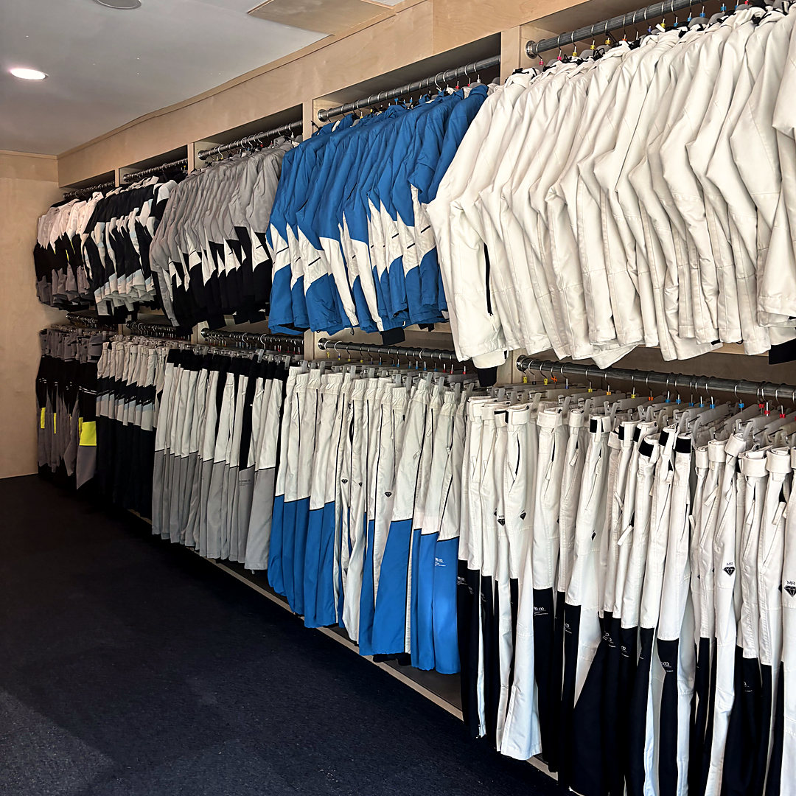
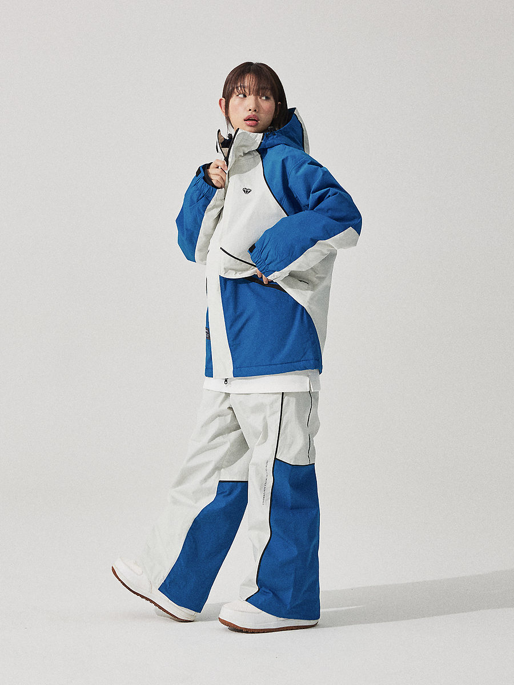
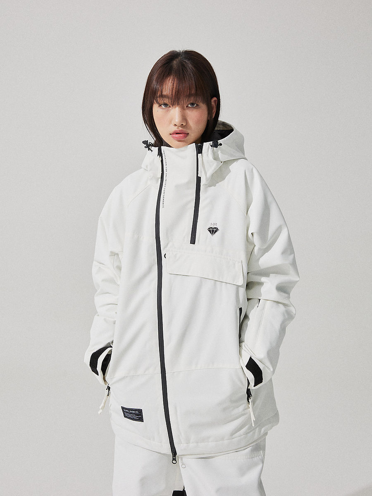
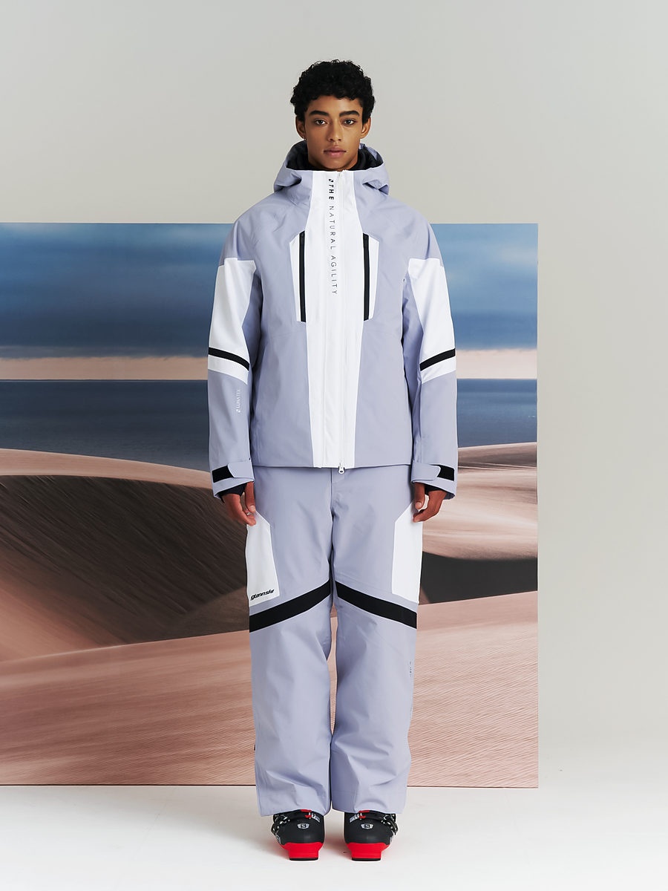
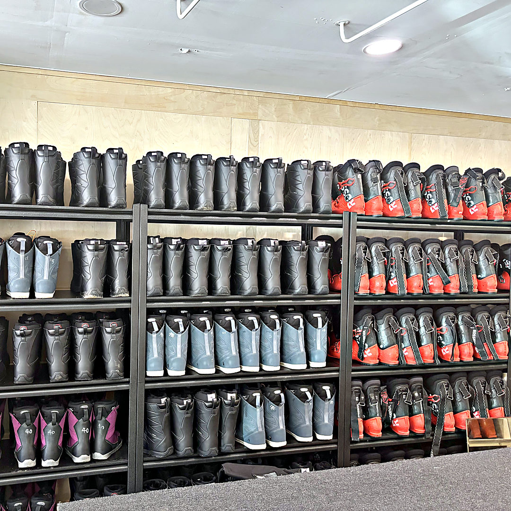

Packing Checklist · 2026/27
무주 스키장 준비물 체크리스트: 빌릴 것·챙길 것·살 것

무주 스키장에 갈 때 스키·보드 장비, 스키복, 헬멧, 고글은 렌탈샵에서 빌리면 됩니다. 직접 챙길 것은 장갑, 긴 양말, 스키복 안에 입을 따뜻한 옷과 갈아입을 옷 정도입니다. 무주놀러와스키샵에서는 장비·의류·헬멧·고글을 풀세트 40,000원에 빌리고, 위생상 대여하지 않는 장갑·양말과 핫팩은 매장에서 살 수 있습니다.
- 빌릴 것장비·의류·헬멧·고글
- 현장 구매장갑·양말·핫팩
- 풀세트 렌탈40,000원
- 리프트권 할인최대 25,000원
렌탈샵에서 빌릴 수 있는 것은 무엇인가요?
부피가 크고 한 시즌에 몇 번 쓰지 않는 물건은 빌리는 편이 편합니다. 무주놀러와스키샵 공개 요금은 아래와 같습니다.
| 품목 | 대여 요금 | 단위 |
|---|---|---|
| 스키·보드 장비 | 15,000원 | 1인 |
| 의류 | 15,000원 | 1인 |
| 헬멧 | 10,000원 | 1개 |
| 고글 | 10,000원 | 1개 |
| 헬멧 + 고글 | 15,000원 | 1개 |
| 풀세트 (장비·의류·헬멧·고글) | 40,000원 | 1인, 오픈 한정가 |
품목을 따로 빌리면 장비·의류·헬멧+고글만 더해도 45,000원이라, 네 가지가 모두 필요하면 풀세트가 유리합니다. 자세한 계산은 렌탈 가격 안내에서 볼 수 있습니다.
직접 챙겨야 할 것은 무엇인가요?
- 장갑: 위생상 대여하지 않습니다. 없으면 매장에서 살 수 있습니다.
- 긴 양말: 부츠 높이까지 올라오는 두툼한 양말이 발이 덜 아픕니다. 매장에서도 팝니다.
- 스키복 안에 입을 옷: 내복이나 기능성 이너 위에 플리스처럼 얇은 옷을 겹쳐 입으면 체온 조절이 쉽습니다.
- 넥워머·비니: 리프트 위에서 바람을 막아 줍니다. 헬멧 아래에는 얇은 비니가 맞습니다.
- 선크림·립밤: 눈에 반사된 햇빛으로 얼굴이 쉽게 탑니다.
- 갈아입을 옷과 수건: 끝나고 젖은 옷을 갈아입고 돌아가면 편합니다.
현장에서 살 수 있는 것은 무엇인가요?
무주놀러와스키샵에서는 위생상 대여하지 않는 장갑과 양말, 그리고 핫팩을 판매합니다. 출발할 때 빠뜨렸거나 타다가 젖었을 때 매장에서 바로 사면 됩니다. 특히 아이와 함께라면 장갑이 젖기 쉬우니 여분을 생각해 두세요.
헬멧은 꼭 써야 하나요?
네. 무주놀러와스키샵 예약 화면에서도 안내하듯 헬멧을 쓰지 않으면 리프트 이용이 제한됩니다. 헬멧이 없다면 헬멧(10,000원)이나 헬멧+고글(15,000원)을 함께 빌리고, 갖고 있다면 예약할 때 '헬멧 지참'을 고르세요. 매장에서 여러 사이즈를 직접 써 보고 고를 수 있습니다.
출발 전에 무엇을 확인하나요?
- 1. 운영일과 운영시간
2026/27 시즌은 11월 27일(금) 오픈 예정입니다. 개장일과 운영시간을 확인하세요. - 2. 렌탈 예약
방문일과 방문 시간(07:30~23:00), 인원, 품목을 넣고 예상 금액을 확인합니다. - 3. 리프트권
3·4·6시간권 중 탈 시간에 맞춰 고르고 렌탈과 함께 할인가로 예약합니다. 요금은 리프트권 안내에 있습니다. - 4. 가는 방법
대중교통이라면 무료 셔틀 시간표와 막차 시간을 확인합니다. - 5. 예약금 입금
예약 후 안내받은 계좌로 예약금 50,000원을 보내면 예약이 확정됩니다.
빈손으로 와도 되나요?
네. 무주놀러와스키샵은 덕유산리조트 정문 앞에서 장비와 26/27 시즌 스키복을 빌려 드립니다. 옷부터 헬멧까지 매장에서 직접 보고 골라 입고 바로 슬로프로 가면 됩니다.




- 리조트 정문 바로 앞구천동로 1050, 장비를 받고 곧장 슬로프로 갑니다.
- 풀세트 40,000원장비·의류·헬멧·고글을 한 번에 빌리는 오픈 한정가입니다.
- 장갑·양말·핫팩 현장 구매위생상 대여하지 않는 장갑·양말과 핫팩을 매장에서 판매합니다.
- 슬로프 앞 무료 배달예약할 때 픽업 장소를 남기면 장비를 슬로프 앞까지 가져다드립니다.
자주 묻는 질문
무주 스키장 갈 때 꼭 챙겨야 하는 준비물은 무엇인가요?
장비·스키복·헬멧·고글은 렌탈샵에서 빌릴 수 있어서 직접 챙길 것은 장갑, 긴 양말, 스키복 안에 입을 옷, 갈아입을 옷 정도입니다.
장갑과 양말도 빌릴 수 있나요?
장갑과 양말은 위생상 대여하지 않습니다. 무주놀러와스키샵에서는 장갑·양말과 핫팩을 매장에서 판매합니다.
스키복과 장비를 한 번에 빌리면 얼마인가요?
무주놀러와스키샵 풀세트는 장비·의류·헬멧·고글을 포함해 40,000원(오픈 한정가)입니다. 품목별로는 장비 15,000원, 의류 15,000원, 헬멧 10,000원, 고글 10,000원, 헬멧+고글 15,000원입니다.
헬멧 없이 스키를 타도 되나요?
헬멧을 쓰지 않으면 리프트 이용이 제한됩니다. 헬멧을 빌리거나, 갖고 있다면 예약할 때 헬멧 지참을 고르세요.